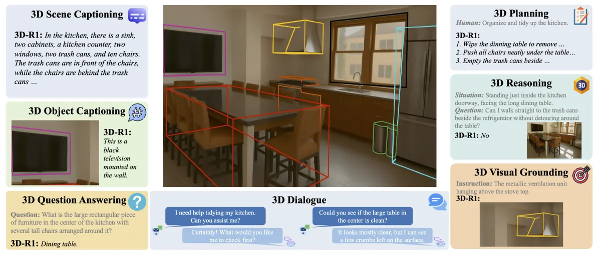
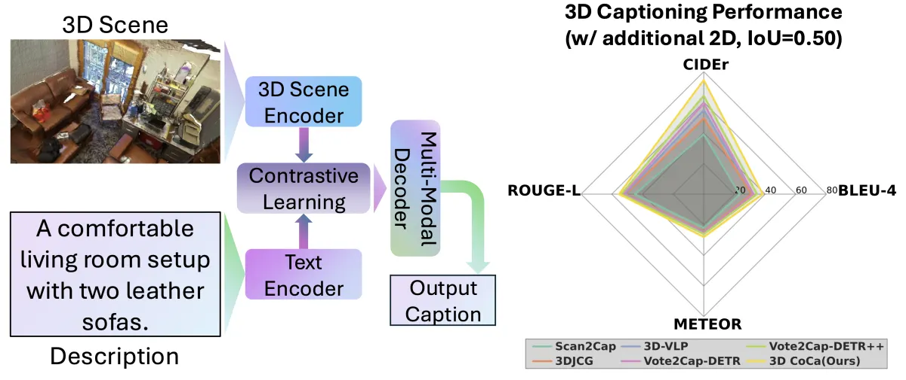

Ting Huang
I am Ting Huang, a visiting researcher in Prof. Hao Tang's group at Peking University. I received my M.S. from Shanghai University of Engineering Science (SUES) and work on embodied AI.
My research focuses on spatial intelligence and generalist embodied systems, including 3D vision-language and vision-language-action (VLA) models for mobile robots. My long-term goal is to build systems that understand and interact with the physical world. Outside research, I enjoy sports and music.
🔥 News
- 2026.06🎉🎉 MobileVLA-R1
, ConsiSpace, and OpenGround
were accepted to ECCV 2026.
- 2026.05🎉🎉 Our RL Position Paper
was accepted to ICML 2026 Position Papers.
- 2026.02🎉🎉 Multigranularity-3DQA was accepted to Expert Systems with Applications.
- 2026.01💼💼 I started a research internship at SRI-Robot, working on embodied AI.
- 2026.01🎉🎉 We released 3D CoCa v2
, a generalizable 3D captioning framework.
- 2025.11🎉🎉 We released MobileVLA-R1
- 2025.11🎉🎉 3D CoCa
was accepted to 3DV 2026.
- 2025.09🐧🐧 I joined Prof. Hao Tang's group at Peking University as a visiting researcher.
- 2025.09🎉🎉 We released Nav-R1
, an embodied foundation model.
- 2025.08🎉🎉 We released 3D-R1
, an open-source generalist model for unified 3D scene understanding.
📝 Publications
3D CoCa v2: Contrastive Learners with Test-Time Search for Generalizable Spatial Intelligence
- 3D CoCa v2 extends 3D CoCa with an inference-only test-time search (TTS) module and an external LLM judge.
MobileVLA-R1: Reinforcing Vision-Language-Action for Mobile Robots
- MobileVLA-R1 bridges language-guided high-level reasoning and continuous low-level control for mobile robots.
- Leveraging a large VLA chain-of-thought dataset and reinforcement learning to produce interpretable plans and robust real-world execution.
Nav-R1: Reasoning and Navigation in Embodied Scenes
- Nav-R1 unifies dialogue, reasoning, planning, and navigation in a single embodied foundation model.
- Using Nav-CoT-110K and GRPO-based RL rewards plus a Fast-in-Slow paradigm to achieve coherent long-horizon reasoning with low-latency control in 3D environments.

3D-R1: Enhancing Reasoning in 3D VLMs for Unified Scene Understanding
- A pioneering 3D-VLM leverages reinforcement learning and dynamic view selection to enhance reasoning capabilities in 3D scene understanding.

3D CoCa: Contrastive Learners are 3D Captioners
- Proposes 3D CoCa, a unified framework that jointly performs contrastive 3D-text alignment and 3D caption generation within one architecture, instead of relying on a two-stage "proposal-then-caption" pipeline.
🥇 Awards & Scholarships
- Dec. 2024 — Outstanding Master's Student Scholarship.
- Dec. 2023 — Graduate Entrance Scholarship.
- Oct. 2020 — First Place, ROBOCON National College Student Robot Competition.
📖 Education
- Sep. 2023 – Jul. 2026 — M.S., Shanghai University of Engineering Science.
- Sep. 2018 – Jun. 2022 — B.S., Hebei University of Engineering.
😊 Academic Services
Conference Reviewer: AAAI 2026, AAAI 2027, 3DV 2026, ICRA 2026